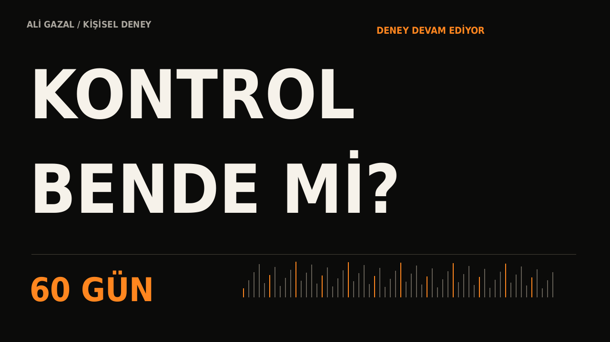

Projeler.
Bir fikrin kitaptan çıkıp
gerçek hayata karıştığı yer.
Machiavelli deneyi tamamlandı; videosu YouTube’da yayımlandı. İrade Terbiyesi: Kitap tamamlandı · 7 günlük deney devam ediyor.
Tamamlanan deney
21–27 Eylül 2026Niccolò Machiavelli / Prens
Machiavelli’nin
üç düşüncesi.
Machiavelli’den uyarlanan üç ilkenin yedi günlük notları.
Prens kitabının siyasal bağlamından kişisel hayata etik biçimde uyarlanan üç davranış kuralı 21–27 Eylül 2026 arasında sınandı.
Deney tamamlandı · video yayında
Deney dosyasını oku
Kontrol / Zaman / Karar
Deney devam ediyor60 GÜNLÜK DAVRANIŞ DENEYİ
Kontrol Bende mi?
60 gün boyunca kendi davranışlarım üzerindeki kontrolü gözlemliyorum. Kararlarımı ve zorlandığım anları kayıtlarla değerlendireceğim.
Deney dosyasını oku
Devam eden deney
Kişisel uygulama sürüyor.DENEY DEVAM EDİYOR
Jules Payot — İrade Terbiyesi
İrade gerçekten eğitilebilir mi?
Kitabı tamamladım. Üç yöntemi seçtim. Şimdi yedi gün boyunca gerçek hayatımda test ediyorum.
Araştırma dosyasını incele